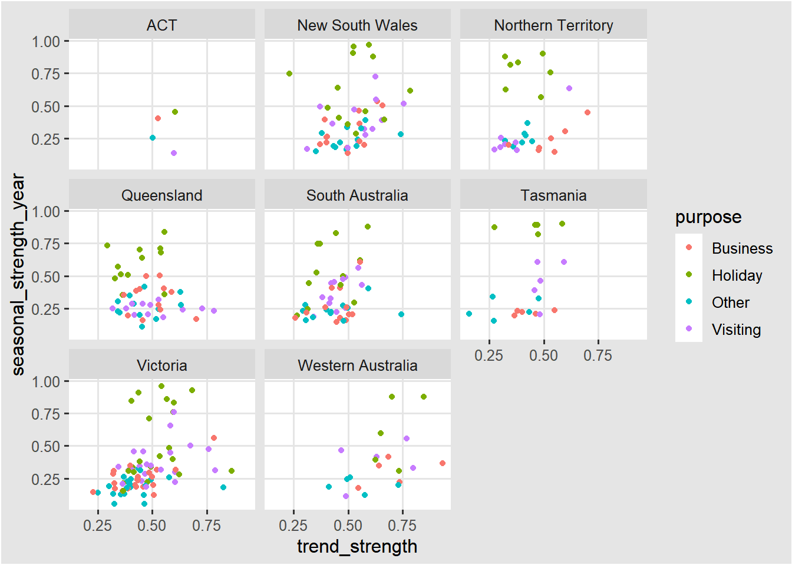
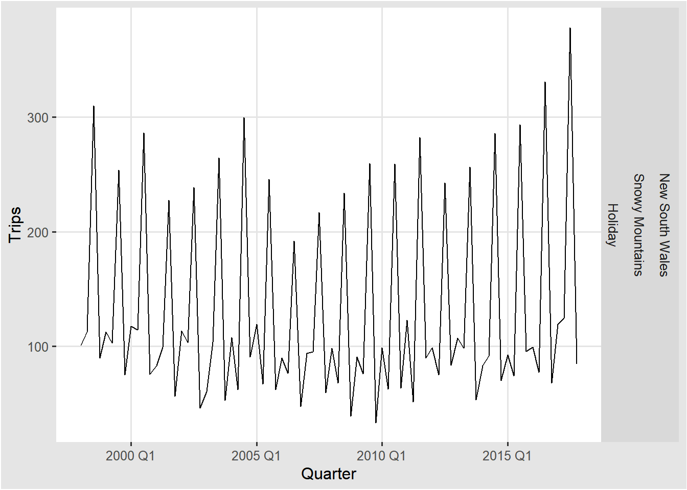

Chapter 4 시계열의 특징
feats패키지에는 FEatures And Statistics from Time Series를
computing하는 함수들이 있다.
우리는 이미 시계열의 특징 몇가지를 앞에서 살펴보았다.
예를 들면, autocorrelations(자기상관)이 시계열의 특징으로 제시되었다.
4.1 몇가지 간단한 통계
features() 함수를 통해 평균, 최소값, 최댓값을 계산할 수 있다.
4.1.1 평균
예를 들어, tourism 데이터(분기별 호주 여행객수)를 사용하여 mean으로 모든 시계열의 평균을 계산할 수 있다.
tourism %>%
janitor::clean_names() %>%
features(trips, list(mean = mean)) %>%
arrange(mean)#> # A tibble: 304 x 4
#> region state purpose mean
#> <chr> <chr> <chr> <dbl>
#> 1 Kangaroo Island South Australia Other 0.340
#> 2 MacDonnell Northern Territory Other 0.449
#> 3 Wilderness West Tasmania Other 0.478
#> 4 Barkly Northern Territory Other 0.632
#> 5 Clare Valley South Australia Other 0.898
#> 6 Barossa South Australia Other 1.02
#> 7 Kakadu Arnhem Northern Territory Other 1.04
#> 8 Lasseter Northern Territory Other 1.14
#> 9 Wimmera Victoria Other 1.15
#> 10 MacDonnell Northern Territory Visiting 1.18
#> # ... with 294 more rowsSouth Australia 주에 있는 캥거루 섬을 방문한 평균 방문객 수가 가장 적었다는 것을 알 수 있다.
4.1.2 사분위수
quantile을 통해 최소값, 제1사분위수, 중위수, 제3사분위수, 최대값을 계산할 수 있다.
tourism %>%
janitor::clean_names() %>%
features(trips, quantile)#> # A tibble: 304 x 8
#> region state purpose `0%` `25%` `50%` `75%` `100%`
#> <chr> <chr> <chr> <dbl> <dbl> <dbl> <dbl> <dbl>
#> 1 Adelaide South Australia Busine~ 68.7 134. 153. 177. 242.
#> 2 Adelaide South Australia Holiday 108. 135. 154. 172. 224.
#> 3 Adelaide South Australia Other 25.9 43.9 53.8 62.5 107.
#> 4 Adelaide South Australia Visiti~ 137. 179. 206. 229. 270.
#> 5 Adelaide Hills South Australia Busine~ 0 0 1.26 3.92 28.6
#> 6 Adelaide Hills South Australia Holiday 0 5.77 8.52 14.1 35.8
#> 7 Adelaide Hills South Australia Other 0 0 0.908 2.09 8.95
#> 8 Adelaide Hills South Australia Visiti~ 0.778 8.91 12.2 16.8 81.1
#> 9 Alice Springs Northern Territo~ Busine~ 1.01 9.13 13.3 18.5 34.1
#> 10 Alice Springs Northern Territo~ Holiday 2.81 16.9 31.5 44.8 76.5
#> # ... with 294 more rows0%는 최소값을 의미하고, 100%는 최대값을 의미한다.
4.1.3 ETC
list()를 통해 평균과 최소값, 제1사분위수, 중위수, 제3사분위수, 최대값을 한번에 계산할 수 있다.
tourism %>%
janitor::clean_names() %>%
features(trips, list(avg = mean, quantile))#> # A tibble: 304 x 9
#> region state purpose avg `0%` `25%` `50%` `75%` `100%`
#> <chr> <chr> <chr> <dbl> <dbl> <dbl> <dbl> <dbl> <dbl>
#> 1 Adelaide South Aus~ Busine~ 156. 68.7 134. 153. 177. 242.
#> 2 Adelaide South Aus~ Holiday 157. 108. 135. 154. 172. 224.
#> 3 Adelaide South Aus~ Other 56.6 25.9 43.9 53.8 62.5 107.
#> 4 Adelaide South Aus~ Visiti~ 205. 137. 179. 206. 229. 270.
#> 5 Adelaide Hills South Aus~ Busine~ 2.66 0 0 1.26 3.92 28.6
#> 6 Adelaide Hills South Aus~ Holiday 10.5 0 5.77 8.52 14.1 35.8
#> 7 Adelaide Hills South Aus~ Other 1.40 0 0 0.908 2.09 8.95
#> 8 Adelaide Hills South Aus~ Visiti~ 14.2 0.778 8.91 12.2 16.8 81.1
#> 9 Alice Springs Northern ~ Busine~ 14.6 1.01 9.13 13.3 18.5 34.1
#> 10 Alice Springs Northern ~ Holiday 31.9 2.81 16.9 31.5 44.8 76.5
#> # ... with 294 more rows4.2 ACF
자기 상관(Autocorrelation)을 앞서 1장에서 배웠다.
4.2.1 feat_acf
자기 상관은 feat_acf를 이용하여 ACF에 관한 정보를 얻을 수 있다.
acf1: 시계열 데이터의 1차 자기상관계수
acf10: 1~10차 자기상관계수 제곱합
diff1_acf1: 1차 차분 시계열의 1차 자기상관계수
diff1_acf10: 1차 차분 시계열의 1~10차 자기상관계수 제곱합
diff2_acf1: 2차 차분 시계열의 1차 자기상관계수
diff2_acf10: 2차 차분 시계열의 1~10차 자기상관계수 제곱합
season_acf1: 첫번째 계절 시차에서의 자기상관계수
tourism %>%
janitor::clean_names() %>%
features(trips, feat_acf)#> # A tibble: 304 x 10
#> region state purpose acf1 acf10 diff1_acf1 diff1_acf10 diff2_acf1
#> <chr> <chr> <chr> <dbl> <dbl> <dbl> <dbl> <dbl>
#> 1 Adelaide Sout~ Busine~ 0.0333 0.131 -0.520 0.463 -0.676
#> 2 Adelaide Sout~ Holiday 0.0456 0.372 -0.343 0.614 -0.487
#> 3 Adelaide Sout~ Other 0.517 1.15 -0.409 0.383 -0.675
#> 4 Adelaide Sout~ Visiti~ 0.0684 0.294 -0.394 0.452 -0.518
#> 5 Adelaide Hills Sout~ Busine~ 0.0709 0.134 -0.580 0.415 -0.750
#> 6 Adelaide Hills Sout~ Holiday 0.131 0.313 -0.536 0.500 -0.716
#> 7 Adelaide Hills Sout~ Other 0.261 0.330 -0.253 0.317 -0.457
#> 8 Adelaide Hills Sout~ Visiti~ 0.139 0.117 -0.472 0.239 -0.626
#> 9 Alice Springs Nort~ Busine~ 0.217 0.367 -0.500 0.381 -0.658
#> 10 Alice Springs Nort~ Holiday -0.00660 2.11 -0.153 2.11 -0.274
#> # ... with 294 more rows, and 2 more variables: diff2_acf10 <dbl>,
#> # season_acf1 <dbl>tourism 데이터(분기별 호주 여행객수)는 분기별 데이터이기 때문에 위 결과에서 season_acf1은 시차 4에서의 자기상관계수값을 의미한다.
4.3 STL
STL분해는 3장에서도 언급되었다. STL은 Seasonal and Trend decomposition using Loess의 줄임말로 robust한 시계열 분해 방법에 해당된다.
시계열 분해는 추세요소\(T_{t}\), 계절요소\(S_{t}\), 관측치 \(y_{t}\)에서 추세요소와 계절 요소를 뺀 나머지 부분인 \(R_{t}\)로 나누어 볼 수 있었다.
\[ y_{t}=T_{t}+S_{t}+R_{t} \]
강한 추세를 가진 데이터의 경우, 계절 조덩된 데이터가 \(R_{t}\)보다 더 큰 변동을 가져야 한다. 그러므로 \(\frac{var(R_{t})}{var(T_{t}+R_{t})}\)는 상대적으로 작아진다. 추세의 강도는 아래와 같이 정의되며, 0과 1사이의 값을 가진다.
\[ F_{t}=max(0,1-\frac{var(R_{t})}{var(T_{t}+R_{t})}) \]
계절성의 강도는 아래와 같이 정의된다.
\[ F_{s}=max(0,1-\frac{var(R_{t})}{var(S_{t}+R_{t})}) \]
4.3.1 feat_stl
feat_stl을 이용하여 STL 분해 요소를 얻을 수 있다. 추세와 계절성의 강도와 함께 아래와 같은 값들도 얻을 수 있다.
seasonal_peak_year: 계절성이 가장 큰 시점
seasonal_trough_year: 계절성이 가장 작은 시점
spikiness: \(R_{t}\)의 분산
linearity: \(T_{t}\)(추세요소)의 선형성
curvature: \(T_{t}\)(추세요소)의 곡률
stl_e_acf1: 추세요소\(T_{t}\)와 계절요소\(S_{t}\)를 제외한 나머지 계열들의 1차 자기상관계수
stl_e_acf10: 추세요소\(T_{t}\)와 계절요소\(S_{t}\)를 제외한 나머지 계열들의 1~10차 자기상관계수 제곱합
tourism %>%
janitor::clean_names() %>%
features(trips, feat_stl)#> # A tibble: 304 x 12
#> region state purpose trend_strength seasonal_streng~ seasonal_peak_y~
#> <chr> <chr> <chr> <dbl> <dbl> <dbl>
#> 1 Adelaide Sout~ Busine~ 0.464 0.407 3
#> 2 Adelaide Sout~ Holiday 0.554 0.619 1
#> 3 Adelaide Sout~ Other 0.746 0.202 2
#> 4 Adelaide Sout~ Visiti~ 0.435 0.452 1
#> 5 Adelaide Hills Sout~ Busine~ 0.464 0.179 3
#> 6 Adelaide Hills Sout~ Holiday 0.528 0.296 2
#> 7 Adelaide Hills Sout~ Other 0.593 0.404 2
#> 8 Adelaide Hills Sout~ Visiti~ 0.488 0.254 0
#> 9 Alice Springs Nort~ Busine~ 0.534 0.251 0
#> 10 Alice Springs Nort~ Holiday 0.381 0.832 3
#> # ... with 294 more rows, and 6 more variables: seasonal_trough_year <dbl>,
#> # spikiness <dbl>, linearity <dbl>, curvature <dbl>, stl_e_acf1 <dbl>,
#> # stl_e_acf10 <dbl>위의 결과를 x축은 트렌드한 정도를, y축은 계절적인 정도를 표현해서 아래와 같이 시각화할 수 있다.
tourism %>%
janitor::clean_names() %>%
features(trips, feat_stl) %>%
ggplot(aes(x = trend_strength, y = seasonal_strength_year,
col = purpose)) +
geom_point() +
facet_wrap(vars(state)) 휴가를 목적으로 하는 관광이 계절성의 강도가 가장 큰 것을 보여준다.
tourism %>%
features(Trips, feat_stl) %>%
filter(seasonal_strength_year == max(seasonal_strength_year)) %>%
left_join(tourism, by = c("State", "Region", "Purpose")) %>%
ggplot(aes(x = Quarter, y = Trips)) +
geom_line() +
facet_grid(vars(State, Region, Purpose))